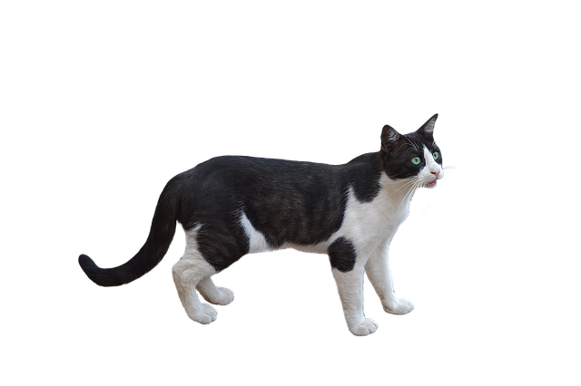

image넣기
<img alt="이미지설명문" src="이미지경로">

alt로 이미지 대체 텍스트 지정 , src로 이미지 표시
웹용 이미지파일 종류
- *.gif - 단순한 그림용. 최대 256가지 색상 표현가능. 움짤 가능, 투명배경 가능
- *.jpg - 사진용. 트루컬러 표현가능하면서 파일 크기는 작음.

- *.png - 위 두가지 형식의 특징 조합. 트루컬러 표현, 투명배경 가능

경로
- 절대경로


- 상대경로 - 웹문서를 기준으로 경로가 지정됨.
상위폴더로 이동시엔 ../를 횟수만큼 추가.
하위폴더로 이동시엔 폴더명/를 추가.
무료 이미지site
- https://pixabay.com/
- https://www.pexels.com/
이미지 크기 변경
가로- width="n" 세로- height="n"

(원본 크기대로 적용시에도 크기를 지정하면 브라우저에 이미지가 빨리 뜸) - width="300"
가로나 세로 중 한 쪽만 지정해도 나머지는 원본 비율에 맞게 자동 조정 됨.
- height="300"
- width="300" height="300"